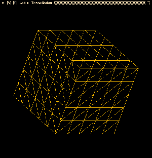
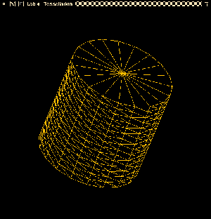
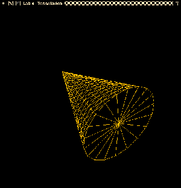
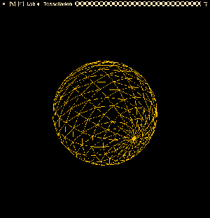

In this assignment, you will gain an understanding of what happens behind the scenes when you create objects whose surfaces are not simple polygons. Computer graphics hardware devices are typically optimized to handle triangles. The process of dividing a surface into a series of triangles is called tessellation.
In this assignment you will be responsible for creating tessellations of four basic shapes: a cube, a cylinder, a cone, and a sphere. Here are examples of tessellated versions of these shapes:
 
 
(In this image, the sphere has been implemented using the latitude/longitude method described in class.) In addition, your solution will be an interactive one; you will vary the tessellation of the objects' surfaces in response to user input.
As with the previous assignments, a programming environment is supplied for you. This environment uses OpenGL, GLFW, and GLEW (C and C++) and OpenGL and GLUT (for Python). You are free to use any of these implementations. The environment includes the following:
Buffers / bufferSet - a support module providing OpenGL vertex and element buffer support.
Canvas / SimpleShape - a support module that provides functions for manipulating the shape being defined.
ShaderSetup - a support module that reads, compiles, and links GLSL shader programs.
Shapes / cgShape - a support module that will contain tessellation code for the four shapes.
Vertex - a module that describes the structure of a vertex (C/C++ only).
tessMain - the main function for the application.
shader.vert, shader.frag - simple GLSL 1.50 shaders
The C version includes a module named FloatVector which provides an extensible vector holding floating-point values. Both versions include a file named header.mak for use with the gmakemake program on our systems to create a Makefile to simplify compilation and linking of the program.
See the Supplied Files section (below) for details on how to download the framework.
The template program is interactive; it accepts keyboard input to control the display. The following keys can be used to operate the program:
| Key(s) | Function |
|---|---|
| a, A | Rotate the current shape around the x-axis, y-axis, and z-axis in sequence (C/C++ version only) |
| x, y, z | Rotate the current shape forward about the x, y, or z axis |
| X, Y, Z | Rotate the current shape backward about the x, y, or z axis |
| 1, c | Select the cube as the current shape (using current tessellation settings) |
| 2, C | Select the cylinder as the current shape (using current tessellation settings) |
| 3, n | Select the cone as the current shape (using current tessellation settings) |
| 4, s | Select the sphere as the current shape (using current tessellation settings) |
| +, - | Increment/decrement the primary subdivision of the current shape by 1 |
| =, _ | Increment/decrement the secondary subdivision of the current shape by 1 |
| r, R | Reset the figure to its original orientation |
| q, Q | Quit the application |
You must edit the Shapes / cgShape module and supply implementations for four functions: makeCube(), makeCylinder(), makeCone(), and makeSphere(). Pay close attention to the comments included in this file, as they explain what each function should do. For each triangle in the tessellation you must call addTriangle() to ensure that its vertices are included in the list for drawing.
For the sphere, the makeSphere() function is set up to accept the radius of the sphere and two tessellation factors (number of slices and number of stacks) as parameters. This implies that the sphere should be implemented using the latitude/longitude method. If you wish to implement the recursive subdivision method, you will use only the first tessellation factor; the second factor should be ignored.
All of the prototypes for the make*() functions begin with code that forces a known lower bound on the tessellation factor. This is particularly important for the "disc" portion of the cylinder and cone, and for both factors for the sphere, because otherwise you'll get a really strange-looking shape.
CAUTION: For all shapes, calls to addTriangle() must list vertices in counter-clockwise order. OpenGL treats polygons with vertices listed in this order as front-facing. Failure to do this will cause your shapes to appear inside-out. (You can tell if you have made this mistake by watching the figure as you rotate it; if any of the triangles are backwards, they will disappear from the figure as you rotate it around to look at them.)
The programming framework for this assignment is available as a ZIP archive. You can either download the lab4-updated.zip archive directly here or retrieve it from the CONTENT->Assignment Material area of mycourses.
The ZIP archive contains a folder named lab4; under that are subfolders c, c++, and python which contain the obvious things, along with a subfolder named misc, which contains a shellscript named compmac. In the C and C++ folders you'll find a file named header.mak, for use on the CS systems to help you generate a Makefile that will compile and link your program with the libraries used by the framework. See the contents of header.mak for details on how to do this.
Submit your modified Shapes or cgShape module and any auxiliary files (e.g., supporting classes) you have created.
If you are working in C, your implementation must be in a file named Shapes.c; if your implementation requires making changes to the Shapes.h file (e.g., you have added function prototypes or other things to the header file), you should submit that file along with Shapes.c. If you make changes to the header.mak file, you may submit your modified version as well.
If you are working in C++, your implementation must be in a file named Shapes.cpp; if your implementation requires making changes to the Shapes.h file (e.g., you have added data members or member functions to the class declaration), you should submit that file along with Shapes.cpp. If you make changes to the header.mak file, you may submit your modified file as well.
If working in Python, your implementation must be in the file cgShape.py
You may optionally submit a modified header.mak file and/or a modified Shapes.h file. The modified header.mak should be based on the version found in the ZIP archive, or the header.mak.glsl file found in the CG course pub directory.
The minimum acceptance test is that your code must be complete - that is, it must compile and link cleanly when submitted. Submissions will not be accepted if they fail to compile and link cleanly. (Warning messages from the compiler are acceptable, but not fatal errors.)
Please place your submitted files to the Dropbox labeled Assignment 4 - Tessellation
This assignment is worth 50 points, distributed as follows:
Proper tessellation: 10 points per shape
The shapes look correct; there are no extra or missing triangles; the shape does not look inside-out (i.e., correct faces are drawn).
Handles parameters: 2 points
Changing the parameters correctly changes the degree of tessellation.
Stability and efficiency: 2 points
The program does not crash or have memory leaks; for these simple shapes, increasing the degree of tessellation does not result in overly sluggish performance.
Documentation and style: 6 points
Self-explanatory.
You are encouraged to discuss the tessellation algorithms with other students in the class. However, you must write your own code. Please do not use code obtained from the web. There are only a few websites with code solutions to these types of problems; it will be obvious if you use this code.
The lecture notes presented in class should help you to get started on this assignment.
The cube, cylinder, and cone should all be one unit wide (e.g., for the cube, the faces are all at offsets of 0.5 in the appropriate direction; for the cylinder, the disks have radius 0.5 and are 0.5 units from the origin along the y axis; etc.), and each should be centered at the origin.
The sphere should also be centered at the origin and should have a diameter of one unit. If you are implementing the recursive subdivision method, remember that the vertex positions for the icosahedron in the lecture notes are for an icosahedron of radius one (i.e., diameter two). As a result, unless you normalize the vertices and scale by 0.5, the icosahedron will appear distorted because of the position of the camera.
The primary and secondary subdivision numbers are used as follows:
For the cube, only the primary subdivision value is used, and all faces are subdivided identically. The minimum value of this factor should be one.
For the cone and cylinder, the primary subdivision controls the number of sides on the figure (i.e., the subdivision of the disks), and the secondary subdivision controls the height. The minimum number of sides should be three (i.e., if a value less than three is given for the primary subdivision, use three instead), and the minimum height factor should be one.
If you are implementing the recursive subdivision version of the sphere, only the primary subdivision value is used. The minimum value of this should be one; for efficiency reasons, you should also set a maximum value of five for this parameter.
If you are implementing the latitude/longitude version of the sphere, the primary subdivision should control the number of slices per disk (the theta direction) and the secondary subdivision should control the number of stacked disks (the phi direction). The minimum values of each of these should be three.
The Shapes / cgShape files in the framework are all set up to use the bounds described above for the tessellation factors. (For the sphere, the bounds are set for the latitude/longitude version; you will need to modify them if you are using recursive subdivision.)
The shader.vert and shader.frag files supplied with the framework require GLSL version 1.50, which is only available with OpenGL 3.2 or newer. If you are attempting to develop your code on a system which doesn't have a new-enough version of GLSL, you'll get error messages when these files are compiled during the execution of your code. The C/C++ driver program will automatically "fall back" to the alternate shaders if GLSL 1.50 isn't available. If you are having trouble with this in Python, please consult with the instructor.